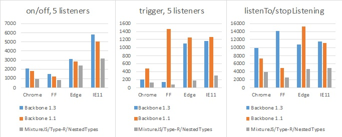

Events
Edit on GitHubBoth Record and Collection uses an efficient synchronous events implementation which is compatible with Backbone 1.1 Events API but is twice faster in average. It comes in form of Events mixin and the Messenger base class.
An implementation is optimized for the large amount of relatively small subscriptions (5-10 events). Here are the benchmark results (lower is the better).

It is also available separately as part of MixtureJS package.
Events mixin
Events is a mixin giving the object the ability to bind and trigger custom named events. Events do not have to be declared before they are bound, and may take passed arguments.
import { mixins, Events } from 'type-r'
@mixins( Events )
class Messenger {
...
}
Messengerabstract base class is included with Type-R, see below.
eventsSource.trigger(event, arg1, arg2, ... )
Trigger callbacks for the given event, or space-delimited list of events. Subsequent arguments to trigger will be passed along to the event callbacks.
High-level listening API
All high-level event subscriptions are stopped automatically on the listener's disposal, and thus does not introduce memory leaks.
This is the preferable listening API and must be used in all application code.
listener.listenTo(other, event, callback)
Tell an object to listen to a particular event on an other object. The advantage of using this form, instead of other.on(event, callback, object), is that listenTo allows the object to keep track of the events, and they can be removed all at once later on. The callback will always be called with object as context.
view.listenTo(model, 'change', view.render );
listener.stopListening([other], [event], [callback])
Tell an object to stop listening to events. Either call stopListening with no arguments to have the object remove all of its registered callbacks ... or be more precise by telling it to remove just the events it's listening to on a specific object, or a specific event, or just a specific callback.
view.stopListening(); // Unsubscribe from all events
view.stopListening(model); // Unsubscribe from all events from the model
All Type-R classes execute this.stopListening() from their dispose() method.
listener.listenToOnce(other, event, callback)
Just like listenTo, but causes the bound callback to fire only once before being removed.
Low-level listening API
This API is more efficient but requires manual action to stop the subscription. Must be used with care.
eventSource.on(event, callback, [context])
Bind a callback function to an object. The callback will be invoked whenever the event is fired. If you have a large number of different events on a page, the convention is to use colons to namespace them: "poll:start", or "change:selection". The event string may also be a space-delimited list of several events...
book.on("change:title change:author", ...);
Callbacks bound to the special "all" event will be triggered when any event occurs, and are passed the name of the event as the first argument. For example, to proxy all events from one object to another:
proxy.on("all", function(eventName) {
object.trigger(eventName);
});
All event methods also support an event map syntax, as an alternative to positional arguments:
book.on({
"change:author": authorPane.update,
"change:title change:subtitle": titleView.update,
"destroy": bookView.remove
});
To supply a context value for this when the callback is invoked, pass the optional last argument: model.on('change', this.render, this) or model.on({change: this.render}, this).
eventSource.off([event], [callback], [context])
Remove a previously-bound callback function from an object. If no context is specified, all of the versions of the callback with different contexts will be removed. If no callback is specified, all callbacks for the event will be removed. If no event is specified, callbacks for all events will be removed.
// Removes just the `onChange` callback.
object.off("change", onChange);
// Removes all "change" callbacks.
object.off("change");
// Removes the `onChange` callback for all events.
object.off(null, onChange);
// Removes all callbacks for `context` for all events.
object.off(null, null, context);
// Removes all callbacks on `object`.
object.off();
Note that calling model.off(), for example, will indeed remove all events on the model — including events that Backbone uses for internal bookkeeping.
eventsSource.once(event, callback, [context])
Just like on, but causes the bound callback to fire only once before being removed. Handy for saying "the next time that X happens, do this". When multiple events are passed in using the space separated syntax, the event will fire once for every event you passed in, not once for a combination of all events
Messenger
Messenger is an abstract base class implementing Events mixin and some convenience methods.
As all Type-R classes, its definition must be preceded with the @define decorator.
import { define, Messenger } from 'type-r'
@define class MyMessenger extends Messenger {
}
readonly messenger.cid
Unique run-time only messenger instance id (string).
messenger.initialize()
Callback which is called at the end of the constructor.
messenger.dispose()
Executes messenger.stopListening() and messenger.off().
Objects must be disposed to prevent memory leaks caused by subscribing for events from singletons.
List of built-in events
Record events
event "change:attrName" (record, value, options)
When a specific attribute has been updated
event "change" (record, options)
When a record's attributes have changed.
Collection events
event "changes" (collection, options)
The main change event. Single event triggered when the collection has been changed.
event "update" (collection, options)
Single event triggered after any number of records have been added or removed from a collection.
event "reset" (collection, options)
When the collection's entire contents have been reset.
event "sort" (collection, options)
When the collection has been re-sorted.
event "add" (record, collection, options)
When a record is added to a collection.
event "remove" (record, collection, options)
When a record is removed from a collection.
event "change" (record, options)
When a record's attributes have changed.